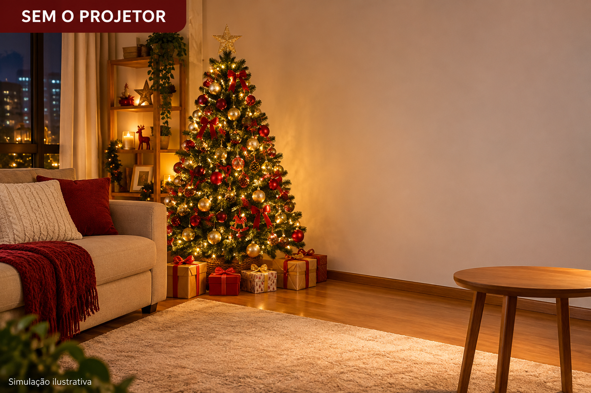
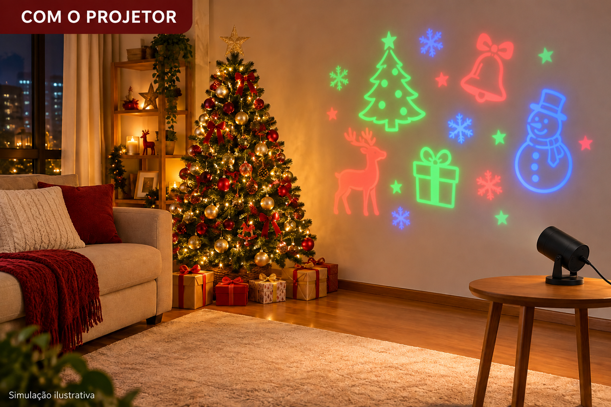
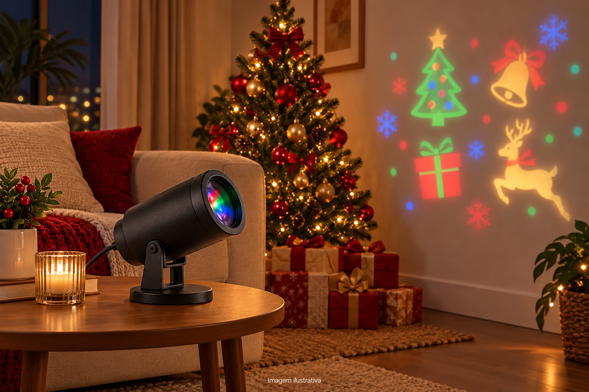
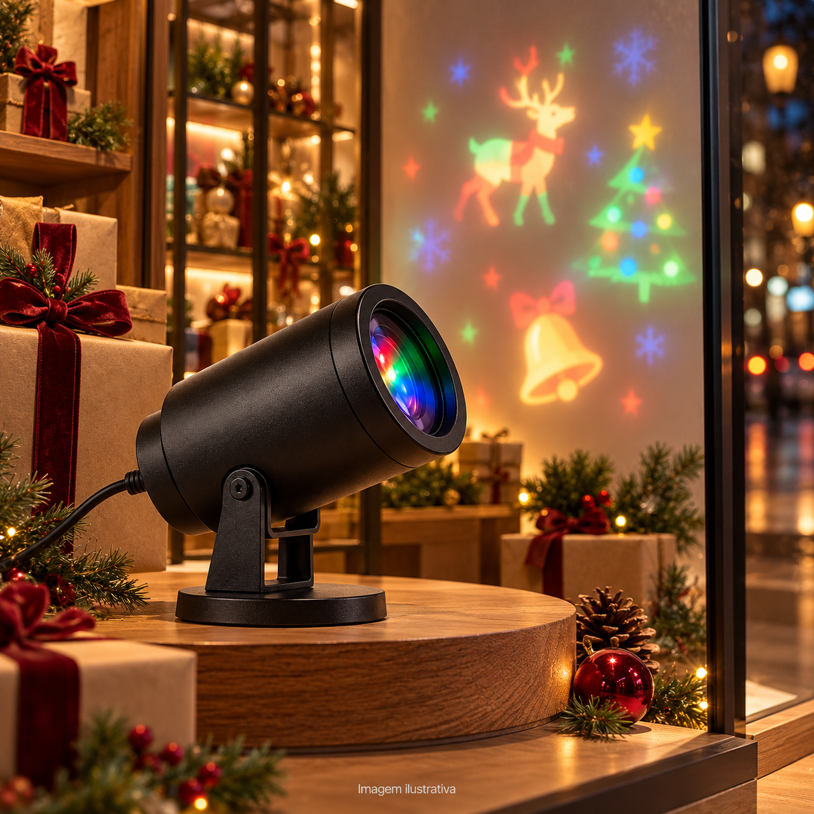

Escolha o lugar
Defina a parede que vai receber os desenhos. Em áreas externas, escolha um local protegido para o aparelho e as conexões.
PROJETOR LED NATALINO
Sua árvore e seus enfeites continuam no lugar. O Projetor LED Natalino acrescenta desenhos coloridos em movimento à parede, para compor o ambiente em que você vai receber a família.
1 projetor + manual · Bivolt automático 110 V/220 V
R$ 179,90
Pix ou cartão. Parcelamento com acréscimo: confira o total no checkout.
COMPRAR COM FRETE GRÁTISFrete grátis. Consulte o prazo de entrega para seu CEP no checkout.
Ver simulação do efeito ↓APROVEITE A DECORAÇÃO QUE VOCÊ JÁ TEM


Simulação ilustrativa. O efeito varia conforme a iluminação, a superfície e a distância.
Compare o efeito na parede. A oferta inclui um projetor; os móveis e enfeites das imagens não acompanham o produto.
O aparelho projeta desenhos natalinos na superfície para a qual você o direciona. É um complemento para a árvore e os enfeites que você já escolheu. O resultado depende da iluminação do ambiente, da superfície e da distância.
NATAL EM MOVIMENTO
Um aparelho para acrescentar luz e movimento à decoração que você já tem. A oferta inclui 1 projetor e manual de instruções, com frete grátis.
R$ 179,90
COMPRAR COM FRETE GRÁTISFrete grátis. Consulte o prazo de entrega para seu CEP no checkout. Pix e cartão disponíveis. Parcelas têm acréscimo; confira o valor total antes de pagar.
Defina a parede que vai receber os desenhos. Em áreas externas, escolha um local protegido para o aparelho e as conexões.
Use a base em uma superfície estável. Confira a conexão e siga o manual para alimentar o projetor bivolt 110 V/220 V.
Direcione para a parede e ajuste a distância. Observe o efeito com a iluminação que você pretende usar no ambiente.
ESCOLHA ONDE USAR
01 / AMBIENTESExplore as imagens ilustrativas na sala, na varanda coberta e na vitrine. Em áreas externas, mantenha o aparelho e as conexões protegidos.


CONHEÇA O PRODUTO
Projeção em movimento com LED RGB multicolorido. Entre os desenhos informados estão árvores, presentes, Papai Noel, rena, boneco de neve, trenó, sino e meia. Os desenhos são sortidos, sem seleção nesta oferta.
O nome comercial menciona USB, mas a ficha não detalha essa conexão nem a inclusão de fonte e cabo. Confirme esses itens com o vendedor antes de comprar. A cobertura varia conforme a distância e o ambiente.
ANTES DE COMPRAR
Preço, efeito, instalação e entrega: o que considerar antes de decidir.
Faz sentido se você quer acrescentar desenhos em movimento à decoração que já tem. O valor é de um projetor com manual e frete grátis. Se você busca apenas luz fixa ou já está satisfeito com seus enfeites, considere isso antes de decidir. No cartão, confira o total com os acréscimos do parcelamento.
As imagens são ilustrativas e não garantem o mesmo resultado na sua casa. A visibilidade e a área projetada dependem da luz do ambiente, da superfície e da distância. Não há metragem de cobertura informada. Considere essas condições ao escolher o local.
O frete é grátis. O prazo depende do seu CEP e deve ser conferido no checkout antes do pagamento. Só conclua a compra se a previsão atender à data em que você pretende usar o produto.
Posicione a base em solo ou superfície plana e estável, direcione a projeção e ajuste a distância. A ficha informa bivolt automático 110 V/220 V. Siga o manual do modelo recebido para a conexão elétrica. A iluminação, a superfície e a distância influenciam o efeito.
Sim. Conforme a descrição, o projetor possui desenhos natalinos com projeção em movimento.
Os desenhos são sortidos, sem seleção nesta oferta. A iluminação é RGB multicolorida. Confirme com o vendedor a cor da carcaça e se existe opção de escolha.
A área varia conforme a distância, a superfície e a iluminação do ambiente. As imagens são ilustrativas e não representam uma cobertura garantida.
O uso informado é interno e externo protegido. Mantenha o aparelho e as conexões protegidos da chuva e da umidade. Não foi informada certificação de impermeabilidade.
A ficha informa bivolt automático 110 V/220 V. O nome comercial também menciona USB, mas a descrição não explica essa conexão. Confirme com o vendedor como o aparelho é conectado e se fonte e cabo acompanham o produto. Siga o manual do modelo recebido.
Um Projetor LED Natalino e o manual de instruções. A inclusão de cabo, fonte e acessórios deve ser confirmada com o vendedor.
O frete é grátis. Consulte o prazo de entrega para seu CEP no checkout antes de finalizar a compra. Confira também os canais de atendimento e as políticas da loja.
NATAL EM MOVIMENTO
1 Projetor LED Natalino + manual de instruções. Desenhos sortidos em movimento, LED RGB e bivolt automático 110 V/220 V.
R$ 179,90
COMPRAR COM FRETE GRÁTISFrete grátis. Consulte o prazo para seu CEP. Parcelamento com acréscimo: confira o total no checkout.